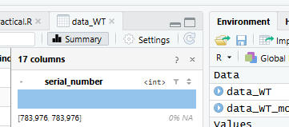
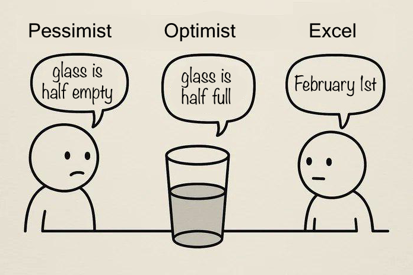

17 Data processing and exploration
17.1 Indexing
Indexing is a way to refer to different parts of a data object.
In R, indices (the plural of “index”) are provided in square brackets [].
For example, if we take a vector, we can refer to specific elements within it.
Type the code below into your script and run the lines of code.
Make sure that you understand why each line produces the output it does.
17.1.1 Indexing in two dimensions
The previous example showed how to index in a one-dimensional vector.
You can also index in two-dimensional data structures like data frames.
For two-dimensional data (like data frames) indexing in R uses a comma, with the row(s) coming before the comma and the column(s) coming after: [row, column]
Tip!
If you leave a blank space either before or after the comma, R will interpret that as “all of them”.
So mydf[ , 3:4] will give you columns 3 and 4 for all rows, whilst mydf[5:10, ] will give you all the columns for rows 5 through 10.
Once again, type the code below into your script and run the lines of code. (NOTE: You will have to change mydf to match whatever you called the wind turbine dataset.)
Make sure that you understand why each line produces the output it does.
mydf[100:110, ]
mydf[100:110, 2]
mydf[100:110, 14:16]
test <- c(1, 3, 4, 6)
mydf[100:110, test]17.2 Selecting columns
This dataset has a lot of columns that we won’t need to use in today’s practical.
For example, for most of the variables it provides a minimum, a mean, and a maximum. (Also, I’m still not sure I understand what reactive power means, even after watching some YouTube videos about it.)
So, let’s use indexing to select just the columns that are most relevant to our research questions. These are:
- The date and time
- The mean windspeed (mps)
- The mean rotor speed (rpm)
- The mean power production (kw)
- The nacelle position (degree)
First, you will need to create a vector (col_nums) with the column numbers for only the columns you want to keep.
Test it on the list of column names to make sure you’ve chosen the correct numbers before proceeding.
# Create a vector with the desired column numbers
col_nums <- c(2, 3, ...)
# Check the column names to make sure they are correct
names(data_WT)[col_nums]Once you’re sure you have the correct column numbers, you can rewrite the data frame to only include all rows, but only those specific columns.
Tip! Rewriting the new data frame over our original data frame is okay in this case, because we can always reload from the original csv file if we make a mistake in selecting columns.
# Use indexing to select just the columns we want
mydf <- mydf[ , col_nums]17.3 Explore the data
Now that we’ve reduced the number of variables in our data frame, use the hist() function to take a look at the distributions of the six remaining variables.
Tip!
You can also get a quick preview of all your variables at once by clicking on the data frame in your Environment tab and looking at the Summary panel that pops up.

17.4 Convert datetime column to date format
Take a closer look at the datetime column in your Environment pane or using the str() function.
Question: What type of data is it?
17.4.1 Data types and dates
So far we’ve mostly talked about three different types of data:
- integer - i.e. whole numbers
- numeric - a number with at least one decimal place, even if it’s zero
- character - text, which is always put in “”
However there are other types of data that sort of fall in between the two.
Unlike numeric data, normal character data can’t have any maths performed upon it. However the following makes complete sense:
2026-10-27 + 4 days = 2026-10-31
So there should probably be a specific form of data for holding dates. This is indeed the case!
Excel is notoriously bad at dealing with dates. It can automatically convert numbers to dates when you don’t want it to, or refuse to format the lovely dates that you have in the way that you wish.
In fact, there is an entire sub-genre of memes on the topic.

This is not entirely the fault of excel. Dates are actually quite hard to deal with!
For example the date 04-08-02 is obviously the 4th of August 2002, unless you are American in which case it is naturally the 8th of April 2002. How is the computer meant to know your nationality?
Is the date 29/02/2026 valid? Why (to the computer) would that be different to 29/02/1992?
This is another area where R excels over Excel (pun intended).
R has a data type specifically made for dates, and a package - lubridate - that is designed to help you manipulate this type of data.
17.5 Converting character data to dates with lubridate
The lubridate package has a bunch of related functions to convert character data to dates. Each one tells R exactly where to expect the day, month, and year, and possibly hours, minutes, and seconds if there is a time provided as well.
These functions are:
ymd_hms()ymd_hm()ymd_h()ymd()ydm_hms()ydm_hm()ydm_h()ydm()dmy_hms()dmy_hm()dmy_h()dmy()mdy_hms()mdy_hm()mdy_h()mdy()
You can probably guess what each of these different variants is used for, but if you want to see the documentation you can run this ?dmy_hm in the console and R will open the help file.
It’s hard to tell from the start of the wind turbine dataset (i.e. “01/01/2022 00:00”) whether the data are in month-day-year or day-month-year.
Either scroll down or use indexing to find a date where it’s more obvious whether the day or month comes first.
Hint: Try using indexing to look at the value in row 700.
mydf$mycol[700]Now that you know the date format, you should be able to select an appropriate lubridate function to convert the character-type data to date-type data.
Just as when we were selecting the columns before, we can overwrite the old datetime column here, because if we make a mistake we can just re-run our previous code.
# Convert date column from character to date
mydf$datetime <- xxx_xxx(mydf$datetime)Check the Environment tab or use the str() function to make sure the datetime column has the correct format now. It should say POSIXct (which stands for “POSIX calendar time”).
17.5.1 Extract the month into a new column
Now that we have our date in a proper date-type format, we want to extract the month into a new column. This will allow us to calculate summary statistics separately for each calendar month.
There is a month() function in lubridate that will return the month value from date-type data.
# Extract the month and put it in a new column
mydf$month <- month(mydf$datetime)